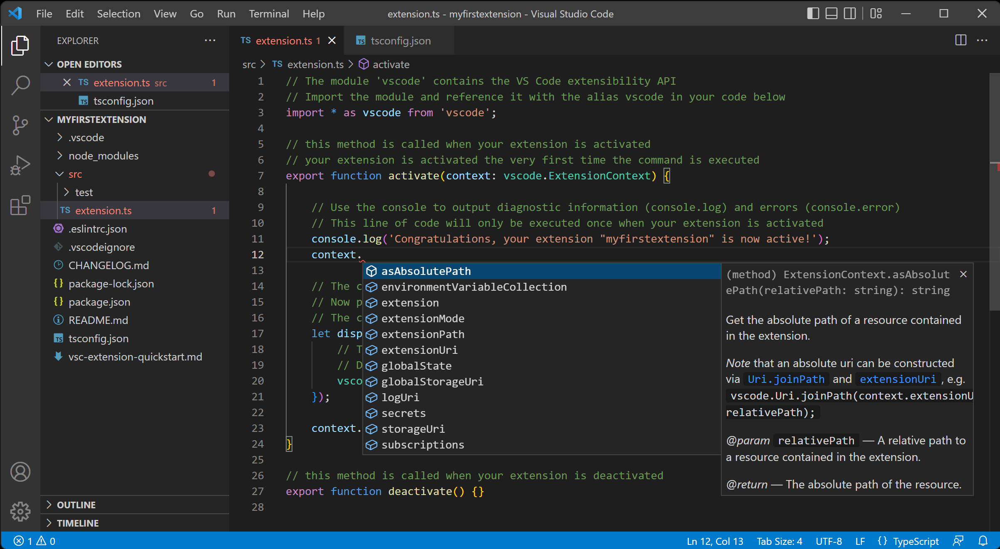
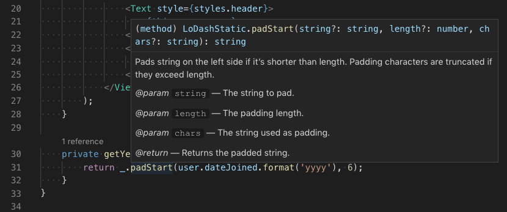
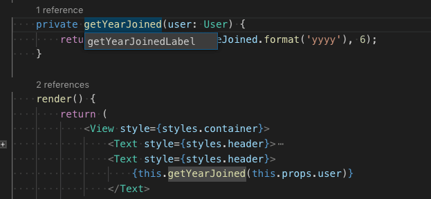

TypeScript in Visual Studio Code
TypeScript is a typed superset of JavaScript that compiles to plain JavaScript. It offers classes, modules, and interfaces to help you build robust components.

Installing the TypeScript compiler
Visual Studio Code includes TypeScript language support but does not include the TypeScript compiler, tsc. You will need to install the TypeScript compiler either globally or in your workspace to transpile TypeScript source code to JavaScript (tsc HelloWorld.ts).
The easiest way to install TypeScript is through npm, the Node.js Package Manager. If you have npm installed, you can install TypeScript globally (-g) on your computer by:
npm install -g typescript
You can test your install by checking the version.
tsc --version
Another option is to install the TypeScript compiler locally in your project (npm install --save-dev typescript) and has the benefit of avoiding possible interactions with other TypeScript projects you may have.
Hello World
Let's start with a simple Hello World Node.js example. Create a new folder HelloWorld and launch VS Code.
mkdir HelloWorld
cd HelloWorld
code .
From the File Explorer, create a new file called helloworld.ts.

Now add the following TypeScript code. You'll notice the TypeScript keyword let and the string type declaration.
let message: string = 'Hello World';
console.log(message);
To compile your TypeScript code, you can open the Integrated Terminal (` (Windows, Linux Ctrl+`)) and type tsc helloworld.ts. This will compile and create a new helloworld.js JavaScript file.
If you have Node.js installed, you can run node helloworld.js.

If you open helloworld.js, you'll see that it doesn't look very different from helloworld.ts. The type information has been removed and let is now var.
var message = 'Hello World';
console.log(message);
IntelliSense
IntelliSense shows you intelligent code completion, hover information, and signature help so that you can write code more quickly and correctly.

VS Code provides IntelliSense for individual TypeScript files as well as TypeScript tsconfig.json projects.
Hover information
Hover over a TypeScript symbol to quickly see its type information and relevant documentation:

You can also show the hover information at the current cursor position with the K I (Windows, Linux Ctrl+K Ctrl+I) keyboard shortcut.
Signature help
As you write a TypeScript function call, VS Code shows information about the function signature and highlights the parameter that you are currently completing:

Signature help is shown automatically when you type a ( or , within a function call. Use Space (Windows, Linux Ctrl+Shift+Space) to manually trigger signature help.
Snippets
In addition to smart code completions, VS Code also includes basic TypeScript snippets that are suggested as you type.

You can install extensions to get additional snippets or define your own snippets for TypeScript. See User Defined Snippets for more information.
Tip: You can disable snippets by setting
editor.snippetSuggestionsto"none"in your settings file. If you'd like to see snippets, you can specify the order relative to suggestions; at the top ("top"), at the bottom ("bottom"), or inlined ordered alphabetically ("inline"). The default is"inline".
Errors and warnings
The TypeScript language service will analyze your program for coding problems and report errors and warnings:
- In the Status bar, there is a summary of all errors and warnings counts.
- You can click on the summary or press M (Windows, Linux Ctrl+Shift+M) to display the PROBLEMS panel with a list of all current errors.
- If you open a file that has errors or warnings, they will be rendered inline with the text and in the overview ruler.

To loop through errors or warnings in the current file, you can press F8 or F8 (Windows, Linux Shift+F8) which will show an inline zone detailing the problem and possible Code Actions (if available):

Code navigation
Code navigation lets you quickly navigate TypeScript projects.
- Go to Definition F12 - Go to the source code of a symbol definition.
- Peek Definition F12 (Windows Alt+F12, Linux Ctrl+Shift+F10) - Bring up a Peek window that shows the definition of a symbol.
- Go to References F12 (Windows, Linux Shift+F12) - Show all references to a symbol.
- Go to Type Definition - Go to the type that defines a symbol. For an instance of a class, this will reveal the class itself instead of where the instance is defined.
- Go to Implementation F12 (Windows, Linux Ctrl+F12) - Go to the implementations of an interface or abstract method.
You can navigate via symbol search using the Go to Symbol commands from the Command Palette (P (Windows, Linux Ctrl+Shift+P)).
- Go to Symbol in File O (Windows, Linux Ctrl+Shift+O)
- Go to Symbol in Workspace T (Windows, Linux Ctrl+T)
Formatting
VS Code includes a TypeScript formatter that provides basic code formatting with reasonable defaults.
Use the typescript.format.* settings to configure the built-in formatter, such as making braces appear on their own line. Or, if the built-in formatter is getting in the way, set "typescript.format.enable" to false to disable it.
For more specialized code formatting styles, try installing one of the formatting extensions from the VS Code Marketplace.
Refactoring
VS Code includes some handy refactorings for TypeScript such as Extract function and Extract constant. Just select the source code you'd like to extract and then click on the light bulb in the gutter or press (. (Windows, Linux Ctrl+.)) to see available refactorings.

See Refactoring TypeScript for more information about refactorings and how you can configure keyboard shortcuts for individual refactorings.
Rename
One of the simplest refactorings is to rename a method or variable. Press F2 to rename the symbol under the cursor across your TypeScript project:

Debugging
VS Code comes with great debugging support for TypeScript, including support for sourcemaps. Set breakpoints, inspect objects, navigate the call stack, and execute code in the Debug Console. See Debugging TypeScript and the overall Debugging topic to learn more.
Debug client side
You can debug your client-side code using a browser debugger such as the built-in Edge and Chrome debugger, or the Debugger for Firefox.
Debug server side
Debug Node.js in VS Code using the built-in debugger. Setup is easy and there is a Node.js debugging tutorial to help you.

Linters
Linters provides warnings for suspicious looking code. While VS Code does not include a built-in TypeScript linter, TypeScript linter extensions available in the Marketplace.
ESLint is a popular linter, which also supports TypeScript. The ESLint extension integrates ESLint into VS Code so you can see linting errors right in the editor and even quickly fix many of them with Quick Fixes. The ESLint plugin guide details how to configure ESLint for your TypeScript projects.
TypeScript extensions
VS Code provides many features for TypeScript out of the box. In addition to what comes built-in, you can install an extension for greater functionality.
Tip: Click on an extension tile above to read the description and reviews to decide which extension is best for you. See more in the Marketplace.
Next steps
To learn more, see:
- TypeScript tutorial - Create a simple Hello World TypeScript in VS Code.
- Editing TypeScript - Specific editing features for TypeScript.
- Refactoring TypeScript - Useful refactorings from the TypeScript language service.
- Compiling TypeScript - Compile TypeScript to a JavaScript target version.
- Debugging TypeScript - Learn about debugging TypeScript both server and client-side with VS Code.
Common questions
Can I use the version of TypeScript that ships with VS 2022?
No, the TypeScript language service that ships with Visual Studio 2019 and 2022 isn't compatible with VS Code. You will need to install a separate version of TypeScript from npm.
How can I use the latest TypeScript beta with VS Code?
The simplest way to try out the latest TypeScript features in VS Code is to install the JavaScript and TypeScript Nightly extension.
You can also configure VS Code to use a specific TypeScript version.